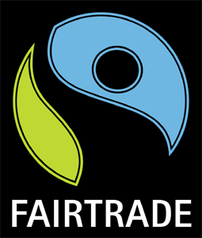

At Boston Beans we're serious about coffee, which is why we source the highest quality coffee beans using Fair Trade practices. Fair Trade is a voluntary program in which fair prices are paid to producers in developing countries. The system of Fair Trade includes:
Every purchase matters! When you buy coffee at Boston Beans, you help farmers' and their families escape poverty. We partner with farmers' in Brazil, Mexico, Coasta Rico, Ethiopia, Kenya, and Tanzania.
